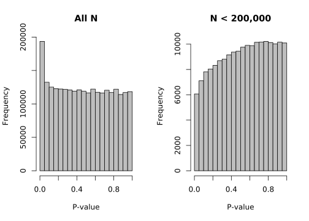
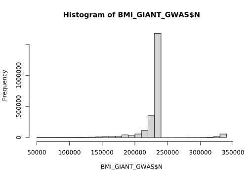
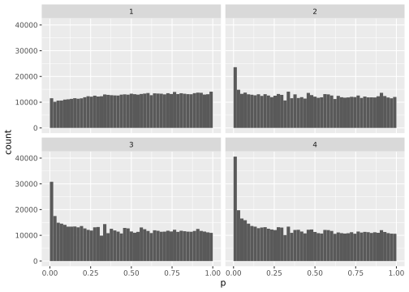

boca_leek_dataset
devtools::load_all("../../IHW")ℹ Loading IHWCreating a generic function for 'nrow' from package 'base' in package 'IHW'#devtools::load_all("/Users/default/Google Drive/currentDocumants/research/2022_IHW-Forest/Code/IHW")https://www.broadinstitute.org/collaboration/giant/index.php/GIANT_consortium_data_files#GWAS_Anthropometric_2015_BMI
All_ancestries_SNP_gwas_mc_merge_nogc.tbl.uniq
load(here("boca_leek/BMI_GIANT_GWAS.RData"))
#BMI_GIANT_GWAS <- BMI_GIANT_GWAS %>% rename(pvalue = p)
#BMI_GIANT_GWAS <- BMI_GIANT_GWAS %>% sample_n(100000)
head(BMI_GIANT_GWAS)# A tibble: 6 × 13
refsnp_id minor_…¹ chr_n…² chrom…³ chrom…⁴ A1 A2 Freq_…⁵ b se
<chr> <dbl> <chr> <int> <int> <chr> <chr> <dbl> <dbl> <dbl>
1 rs10 0.0194 7 9.28e7 9.28e7 C A 0.0333 0.0072 0.0123
2 rs1000000 0.166 12 1.26e8 1.26e8 G A 0.367 -0.0001 0.0043
3 rs10000010 0.428 4 2.16e7 2.16e7 T C 0.425 0.0022 0.0029
4 rs10000012 0.140 4 1.36e6 1.36e6 G C 0.192 -0.0096 0.0053
5 rs10000013 0.133 4 3.72e7 3.72e7 A C 0.167 0.0096 0.0043
6 rs10000017 0.114 4 8.39e7 8.39e7 C T 0.233 0.0038 0.0045
# … with 3 more variables: p <dbl>, N <dbl>, Freq_MAF_Int_Hapmap <fct>, and
# abbreviated variable names ¹minor_allele_freq, ²chr_name, ³chrom_start,
# ⁴chrom_end, ⁵Freq_MAF_Hapmaphttps://github.com/SiminaB/Fdr-regression/blob/master/BMI%20GIANT%20meta-analysis/2.make_Figure_1.Rmd
par(mfrow=c(1,2))
hist(BMI_GIANT_GWAS$p, col="grey", main="All N", xlab="P-value")
hist(BMI_GIANT_GWAS$p[BMI_GIANT_GWAS$N < 200000],
col="grey", main="N < 200,000", xlab="P-value")
hist(BMI_GIANT_GWAS$N)
hist(BMI_GIANT_GWAS$Freq_MAF_Hapmap)groups_by_filter_local <- function(covariate, nbins, ties.method="random", seed=NULL){
if (!is.null(seed) && ties.method=="random"){
#http://stackoverflow.com/questions/14324096/setting-seed-locally-not-globally-in-r?rq=1
tmp <- runif(1)
old <- .Random.seed
on.exit( { .Random.seed <<- old } )
set.seed(as.integer(seed))
}
if(ties.method == "random"){
rfs <- rank(covariate, ties.method=ties.method)/length(covariate)
as.factor(ceiling( rfs* nbins))
}else if(ties.method == "systematic"){
#will lead to systematic bias with tias, but has more helpful factor labels
#breaks <- quantile(covariate, probs = seq(0, 1, length.out = nbins+1))
#cut(covariate, breaks=breaks, include.lowest=TRUE)
#oneR::bin(covariate, method = "content", nbins = nbins)
Hmisc::cut2(covariate, g=nbins)
}
}names(BMI_GIANT_GWAS) [1] "refsnp_id" "minor_allele_freq" "chr_name"
[4] "chrom_start" "chrom_end" "A1"
[7] "A2" "Freq_MAF_Hapmap" "b"
[10] "se" "p" "N"
[13] "Freq_MAF_Int_Hapmap"BMI_GIANT_GWAS <- BMI_GIANT_GWAS %>%
mutate(N_bin = groups_by_filter(N, nbins = 4),
MAF_bin = groups_by_filter(Freq_MAF_Hapmap, nbins = 4))ggplot(BMI_GIANT_GWAS,
aes(x = p)) +
geom_histogram(boundary = 0, bins = 50) +
facet_wrap(vars(N_bin), nrow = 2) 
ggplot(BMI_GIANT_GWAS,
aes(x = p)) +
geom_histogram(boundary = 0, bins = 50) +
facet_wrap(vars(MAF_bin), nrow = 2) Run IHW
Benjamini Hochberg
BMI_GIANT_GWAS_p_adjust <- p.adjust(BMI_GIANT_GWAS$p, method = "BH")
sum(BMI_GIANT_GWAS_p_adjust <= 0.05)[1] 12400IHW
alpha <- 0.05
nodedepth_forest <- 7
nbins_quantile <- 2^nodedepth_forestihw_quantile_n <- IHW::ihw(p ~ N,
data = BMI_GIANT_GWAS,
lambdas = Inf,
alpha = alpha,
nbins = nbins_quantile,
stratification_method = "quantiles")
rejections(ihw_quantile_n) [1] 15536ihw_quantile_maf <-
IHW::ihw(p ~ Freq_MAF_Hapmap,
data = BMI_GIANT_GWAS,
lambdas = Inf,
alpha = alpha,
nbins = nbins_quantile,
stratification_method = "quantiles")
rejections(ihw_quantile_maf) [1] 14766ihw_quantile_n_maf <-
IHW::ihw(
p ~ Freq_MAF_Hapmap + N,
data = BMI_GIANT_GWAS,
lambdas = Inf,
alpha = alpha,
nbins = nbins_quantile,
stratification_method = "quantiles")We recommend that you supply (many) more than 1000 p-values for meaningful data-driven hypothesis weighting results.rejections(ihw_quantile_n_maf) [1] 16317nbins(ihw_quantile_n_maf)[1] 128ihw_forest_n_maf <-
IHW::ihw(
p ~ Freq_MAF_Hapmap + N,
data = BMI_GIANT_GWAS,
alpha = 0.05,
lambdas = Inf,
stratification_method = "forest",
nodedepth = nodedepth_forest,
n_censor_thres = 4, ntrees = 4, nodesize = 3000
)For 2479544 non-na pvalues, we recommend 40 stratification bins for granular hypothesis weighting. Consider to increase nodedepth or decrease nodesize.We recommend that you supply (many) more than 1000 p-values for meaningful data-driven hypothesis weighting results. Consider to decrease nodedepth or increase nodesize.lengths <- lapply(ihw_forest_n_maf@weight_matrices_forest, function(weight_matrices_forest_fold){
sapply(weight_matrices_forest_fold, length)
})
median(unlist(lengths))[1] 80rejections(ihw_forest_n_maf)[1] 16832ihw_forest_all <-
IHW::ihw(
p ~ Freq_MAF_Hapmap + N +minor_allele_freq+chrom_start,
data = BMI_GIANT_GWAS,
alpha = 0.05,
#lambdas = Inf,
stratification_method = "forest",
nodedepth = nodedepth_forest,
n_censor_thres = 4, ntrees = 4, nodesize = 3000
)For 2479544 non-na pvalues, we recommend 40 stratification bins for granular hypothesis weighting. Consider to increase nodedepth or decrease nodesize.We recommend that you supply (many) more than 1000 p-values for meaningful data-driven hypothesis weighting results. Consider to decrease nodedepth or increase nodesize.rejections(ihw_forest_all)[1] 16717save.image(paste0(Sys.Date(),"_boca_leek_analysis.RData"))